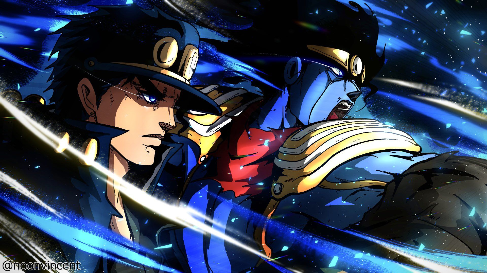

Um Stand é a representação da energia vital de uma pessoa em forma de figura.
Só quem também tem um Stand consegue enxergar o Stand dos outros.
Regra importante: se o Stand se machuca, o dono se machuca junto.
Stands famosos
| Stand | Usuário | Poder |
|---|---|---|
| Star Platinum | Jotaro Kujo | Muita força e para o tempo |
| Crazy Diamond | Josuke Higashikata | Conserta objetos e cura pessoas |
| Gold Experience | Giorno Giovanna | Cria vida a partir de objetos |
| Stone Free | Jolyne Cujoh | Vira fio e amarra o inimigo |
| Tusk | Johnny Joestar | Atira as próprias unhas |
| The World | Dio Brando | Para o tempo |
De onde vêm os nomes
O autor é fã de música, então quase todo Stand tem nome de banda ou de música.
Por isso aparecem nomes como Killer Queen, Highway Star e Sticky Fingers.